Последовательностные элементы (issue #7)
Содержание
- 1. Базовый элемент: GD — прозрачная защёлка (4×NOR)
- 2. Обозначения на аннотированном нетлисте
- 3. GD: 65 защёлок, из них 32 уже вынесены в примитив
- 4. FD — счётная ячейка (12 штук): GD + 2 NOR
- 5. TCE — счётная ячейка V-счётчика (3 штуки): GD + 4 NOR
- 6. TRCE — биты 3..8 V-счётчика: 6 GD + общая обвязка
- 7. TRC? — биты 6..8 H-счётчика: 3 GD + общая обвязка
- 8. SR — сдвиговый регистр пикселей: ячейка сдвига + GD
- 9. contention — две защёлки среди комбинаторики арбитра
- 10. Полная инвентаризация
- 11. VCounter: что подтвердилось, а что нет
- 12. Что осталось сделать по issue #7
Задача issue #7: найти в модульном HDL все триггеры и оформить их отдельными
модулями. Сейчас модульный HDL «валится на иксах» именно потому, что в примитивы
свёрнуты только защёлки GD, а счётчики, сдвиговый регистр, делитель FLASH и
разные спорадические защёлки остались закольцованными NOR прямо в тексте модулей
(см. specs/hdl-vs-netlist-verification.md, раздел 4.2).
Этот раздел — инвентаризация всей последовательностной логики чипа: что именно
является триггером, из чего он собран и как помечен на аннотированном нетлисте.
Все рисунки — вырезки из imgstore/ula6c001_annotated.png (на них подписаны
входы синим, выходы красным, плюс легенда под картинкой).
1. Базовый элемент: GD — прозрачная защёлка (4×NOR)
Единственный запоминающий элемент чипа — прозрачная защёлка GD, и она
всегда занимает ровно четыре NOR:
S1 = nor(nE, D) S2 = nor(S1, nE) <- управляющий каскад
Q = nor(S1, nQ) nQ = nor(S2, Q) <- RS-ядро, закольцованные NOR
Как это работает:
- при
nE = 0(разрешение активно) каскад прозрачен:S1 = /D,S2 = D, ядро повторяет вход, т.е.Q = D,nQ = /D; - при
nE = 1(пассивно) на входах ядра оказываетсяS1 = S2 = 0, и закольцованная пара NOR хранит предыдущее состояние; Q/nQ— парафазный выход; в HDL это примитивGD(if (~nE) val = D;,nQ = ~Q).
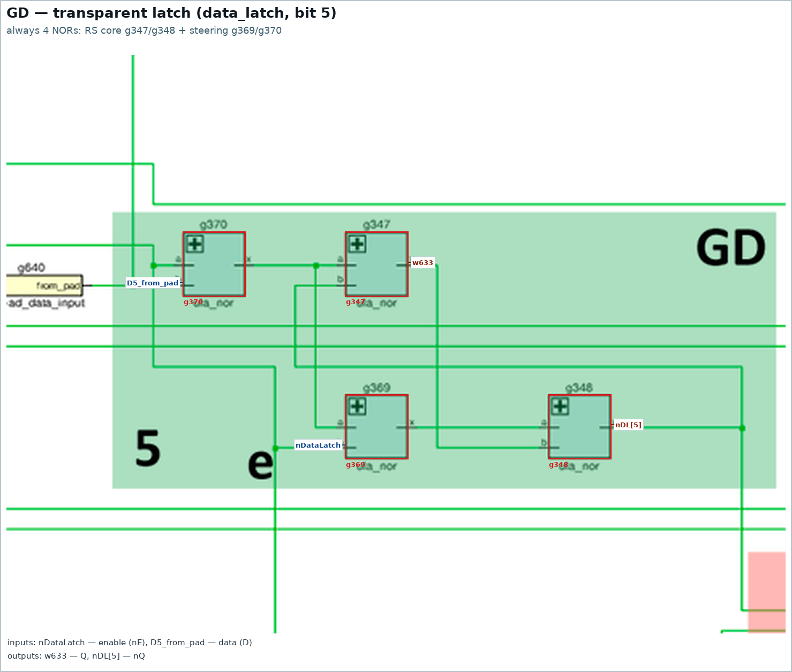
На примере бита 5 защёлки данных: D = D5_from_pad, nE = nDataLatch,
ядро g347/g348 (это оно держит бит), управляющие g369/g370, выходы
Q (w633) и nQ = nDL[5], который идёт в сдвиговый регистр пикселей.
В чипе 65 таких защёлок. Отдельных «голых» RS-защёлок из двух NOR нет:
все 39 двухвентильных петель нетлиста — это RS-ядра защёлок GD (проверяется
скриптом генератора: у каждого GD ровно 4 вентиля, и каждая двухвентильная
петля является чьим-то ядром).
Второй пример — Timing (защёлка синхро-окна в video_signal_features): та же
схема, только ядро g150/g151, управляющие g119/g120, nE = nSync,
D = V[0].
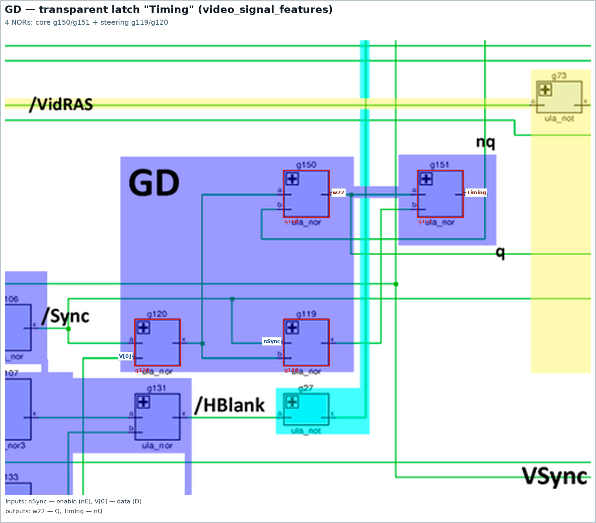
2. Обозначения на аннотированном нетлисте
| подпись на картинке | что это | где (модуль HDL) |
|---|---|---|
GD i |
прозрачная защёлка (4×NOR) | DataLatch, Attribute Latch, Attribute Output Latch, Border Color (io), Latch Control, Contention Handler, Pixel Shift Register, Timing |
FD |
счётная ячейка = GD + 2 NOR обвязки |
ClkGen, Flash Clock (5 ячеек), HCounter (биты 0..5) |
TCE |
счётная ячейка = GD + 4 NOR обвязки |
VCounter (биты 0..2) |
TRCE |
биты 3..8 VCounter: шесть GD + общая обвязка |
VCounter |
TRC / TRC? |
биты 6..8 HCounter: три GD + общая обвязка |
HCounter |
SR |
ячейка сдвига (4 NOR) + плечо GD |
Pixel Shift Register |
Карта: все 65 защёлок (GD, красные) и счётные ячейки (FD — синие, TCE —
зелёные, SR — малиновые, ядра TRCE/TRC — фиолетовое/оранжевое):
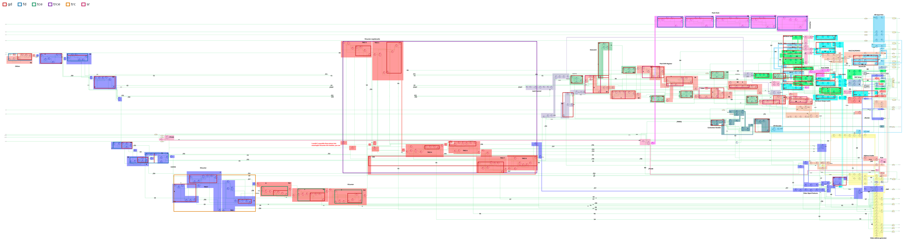
3. GD: 65 защёлок, из них 32 уже вынесены в примитив
| где | защёлок | статус в HDL |
|---|---|---|
data_latch (DataLatch[0..7]) |
8 | примитив GD |
attr_latch (AttrLatch[0..7]) |
8 | примитив GD |
ao_latch (AOLatch[0..7]) |
8 | примитив GD |
io (B0_B, B1_R, B2_G, Tape, Speaker) |
5 | примитив GD |
latch_control (VidEn) |
1 | примитив GD |
contention (/MREQ, /IOREQ) |
2 | примитив GD |
hcounter (по одной на бит 0..8) |
9 | рассыпуха |
vcounter (по одной на бит 0..8) |
9 | рассыпуха |
flash_clock (каскад делителя) |
5 | рассыпуха |
clkgen (÷2) |
1 | рассыпуха |
pixel_shift_reg (плечи SR) |
8 | рассыпуха |
video_signal_features (Timing) |
1 | рассыпуха |
То есть 32 защёлки уже свёрнуты в примитив GD (hdl/ulabase.v), а
33 остались на вентилях — это и есть основная работа по issue #7. Обратите
внимание: в каждой счётной ячейке (FD, TCE, TRCE, TRC) сидит ровно одна
защёлка GD, вокруг которой собрана обвязка счёта.
Полная таблица по каждой защёлке (модуль, ядро, управляющие вентили, nE, D)
печатается скриптом: python3 tools/gen_seq_crops.py --table.
4. FD — счётная ячейка (12 штук): GD + 2 NOR
Одна и та же схема из 6 NOR: защёлка GD (4 вентиля, на рисунках красные) и
два вентиля обвязки (оранжевые), которые замыкают её в счётное кольцо
(nQ → D) и формируют перенос. Работает как делитель на 2.
clkgen — делитель OSC:
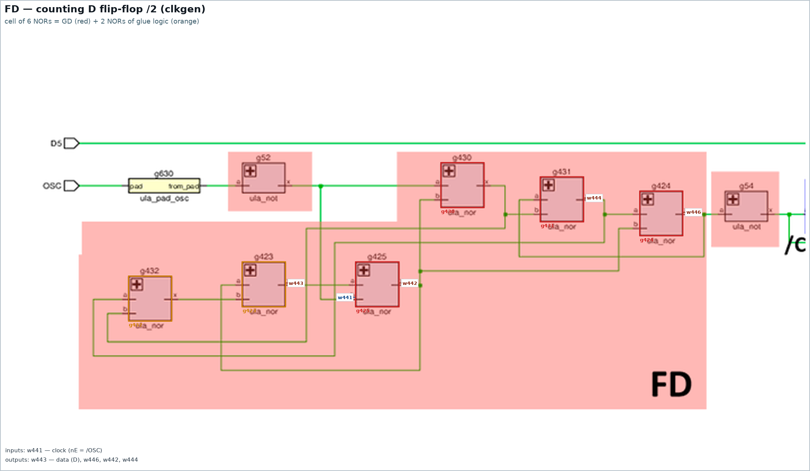
hcounter, биты 0..5 (такт /nCLK7, выходы nC[i]/C[i]):
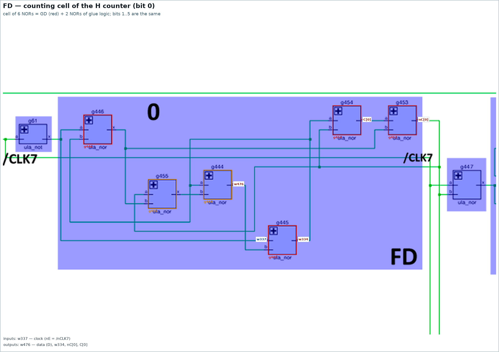
flash_clock — каскад из пяти таких ячеек:
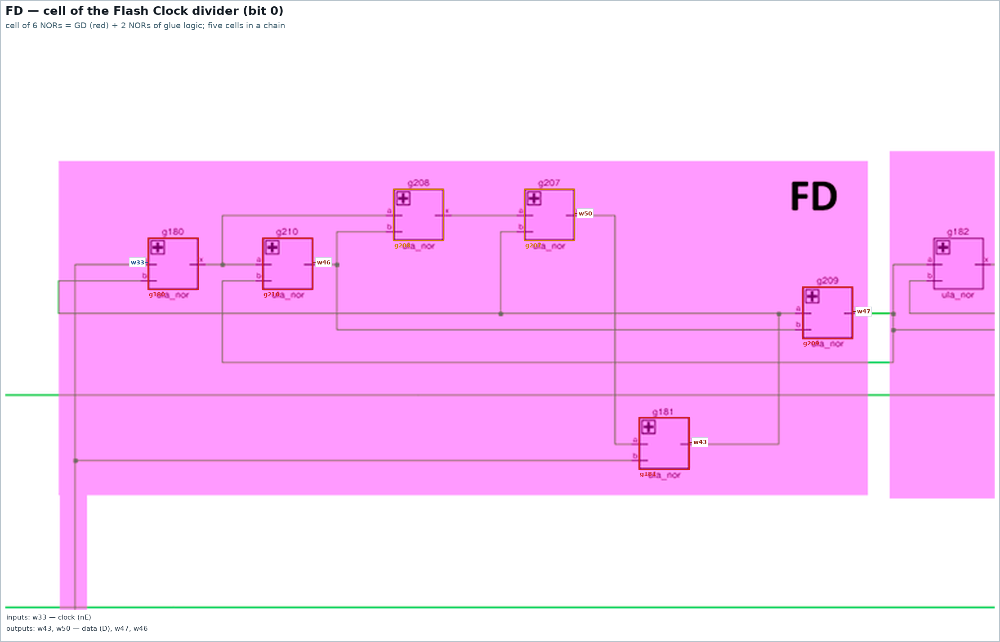
5. TCE — счётная ячейка V-счётчика (3 штуки): GD + 4 NOR
Ячейка из 8 NOR: та же защёлка GD (красные) плюс четыре вентиля обвязки
(перенос и сброс по HCrst). Биты 0..2 V-счётчика сделаны одинаково и
тактируются CLKHC6:
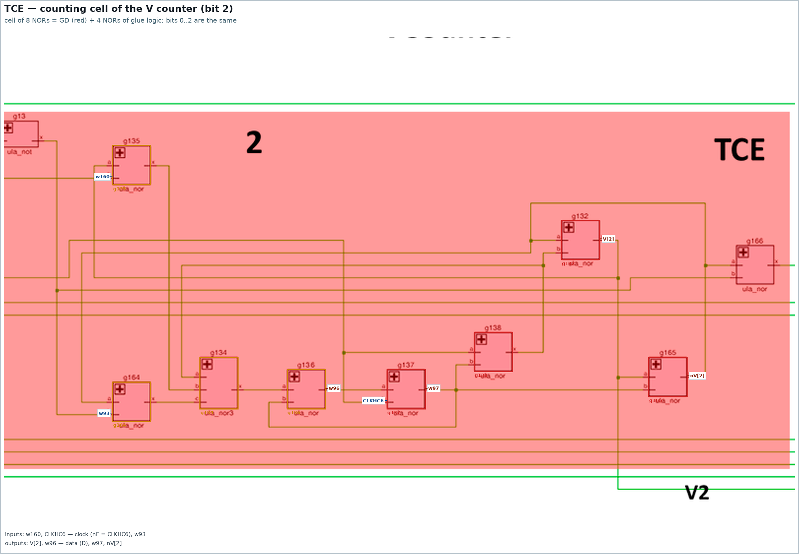
6. TRCE — биты 3..8 V-счётчика: 6 GD + общая обвязка
С бита 3 V-счётчик перестаёт быть набором одинаковых ячеек: биты 3..8 — один
цикл из 59 вентилей, в котором шесть защёлок GD (красные) окружены общей
обвязкой (оранжевые). Именно это место vcounter.md называет «распидорасенным».
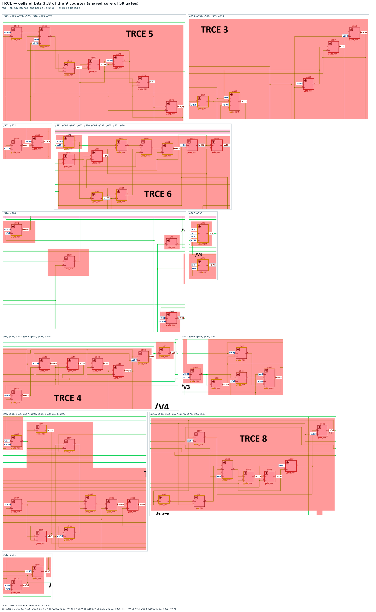
Общие сигналы (проверено по нетлисту и HDL):
| сигнал | вентиль | формула | кто использует |
|---|---|---|---|
vclk2 (w193) |
g523 |
nor(nTCLKA, nC5) |
вентили битов 3..8 |
vrst (w295) |
g567 |
nor4(nV[5], nV[4], nV[8], w278) |
g539 (бит 3), g547 (4), g569 (5), g566 (8) |
перенос w278 |
g89 |
not(w98), где w98 — выход бита 2 |
g538, g540 (бит 3) и g567 (формирование vrst) |
Последняя строка — пример экономии: инвертор g89 обслуживает и перенос из
бита 2 в бит 3, и дополнительный сброс vrst. В причёсанном HDL g89 остаётся
обычным ula_not, а TRCE делается модулем без «лишнего» выхода.
7. TRC? — биты 6..8 H-счётчика: 3 GD + общая обвязка
Симметричное место у H-счётчика: биты 0..5 — отдельные FD-ячейки, а биты 6..8 —
ядро из 25 вентилей с тремя защёлками GD (по одной на бит) и общим HCrst
(g104 = nor(nC[8], nC[7])). В аннотации это помечено TRC/TRC? — то есть
автор разметки сам не был уверен в типе.
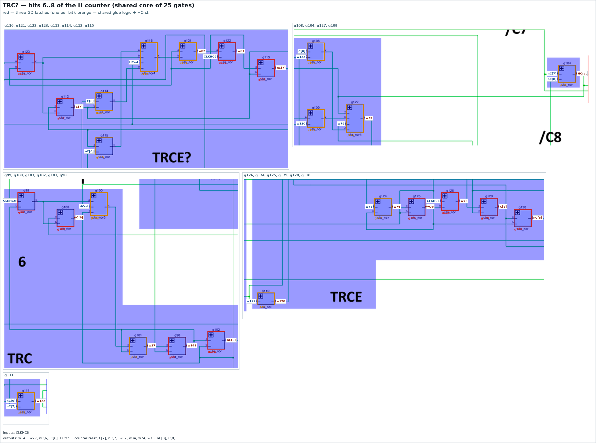
8. SR — сдвиговый регистр пикселей: ячейка сдвига + GD
Бит сдвигового регистра — это ячейка сдвига с загрузкой (NOR3 g337 +
g336/g338/g399, оранжевые) и защёлка GD на выходе (красные).
Хитрость: у этой защёлки управляющие NOR (g398/g399) общие с ячейкой сдвига —
поэтому одной парой вентилей разработчики обслужили и сдвиг, и защёлку.
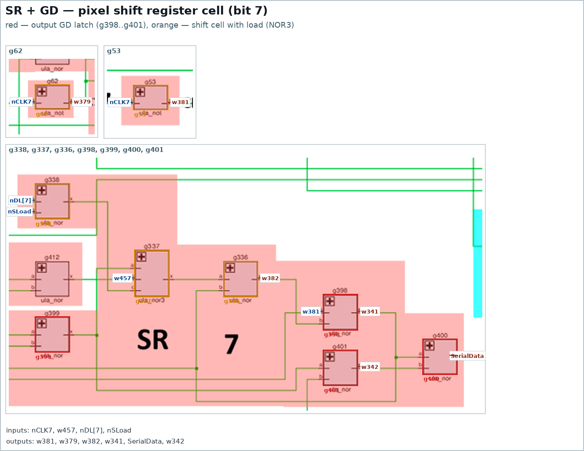
9. contention — две защёлки среди комбинаторики арбитра
В арбитре контеншна ровно две защёлки GD — /MREQ (g394..g397) и
/IOREQ (g392, g393, g402, g403); обе уже вынесены в примитив GD.
Всё остальное в этом модуле (g42/g43/g48, g383/g384, NOR4/NOR5
g404/g405) — обычная комбинационная логика арбитра, триггерами не
является:
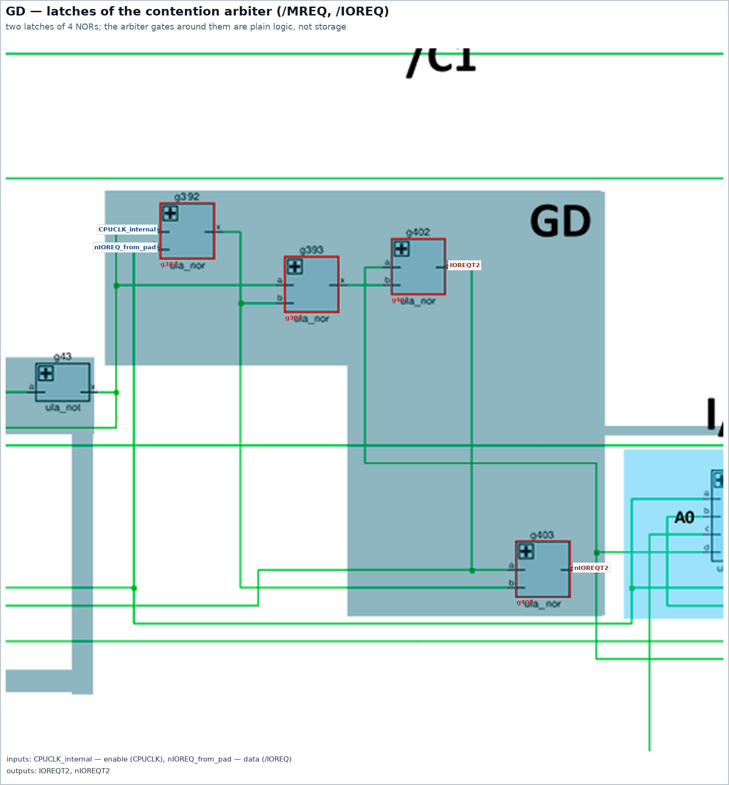
10. Полная инвентаризация
Ниже — вывод python3 tools/gen_seq_crops.py --table (вентили указаны именами из
нетлиста; nE — разрешение/такт, D — вход данных).
GD в примитиве (свёрнутые защёлки, 32 шт.)
| модуль | защёлки | вентили (ядро + управление) | nE | D |
|---|---|---|---|---|
latch_control |
nVidEn |
g466, g467 + g480, g481 | nC[3] (w203) |
nBorder (w260) |
data_latch |
8 защёлок | g220, g247 + g219, g248 (×8) | nDataLatch (w447) |
D0_from_pad (w7) |
attr_latch |
8 защёлок | g222, g245 + g221, g246 (×8) | nAttrLatch (w418) |
D0_from_pad (w7) |
ao_latch |
8 защёлок | g227, g228 + g225, g226 (×8) | nAOLatch (w340) |
AL[0] (w506) |
io |
B0_B, B1_R, B2_G, Tape, Speaker |
g224, g243 + g223, g244 (×5) | nPortWR (w236) |
D0_from_pad (w7) |
contention |
/IOREQ, /MREQ |
g402, g403 + g392, g393 (×2) | CPUCLK_internal (w405) |
nIOREQ_from_pad (w259) |
GD-рассыпуха (33 шт.)
| модуль | защёлка | ядро (RS) | управление | nE | D |
|---|---|---|---|---|---|
clkgen |
FD | g424, g431 | g425, g430 | w441 |
w443 |
hcounter |
C[6] | g102, g103 | g98, g99 | CLKHC6 (w34) |
w27 |
hcounter |
C[7] | g112, g113 | g122, g123 | CLKHC6 (w34) |
w82 |
hcounter |
C[8] | g128, g129 | g125, g126 | CLKHC6 (w34) |
w74 |
hcounter |
C[0] | g453, g454 | g445, g446 | w337 |
w476 |
hcounter |
C[1] | g452, g472 | g470, g471 | w383 |
w384 |
hcounter |
C[2] | g507, g524 | g498, g499 | w232 |
w230 |
hcounter |
C[3] | g508, g509 | g494, g495 | w207 |
w206 |
hcounter |
C[4] | g521, g522 | g512, g513 | w224 |
w225 |
hcounter |
C[5] | g519, g520 | g489, g490 | w202 |
w200 |
vcounter |
V[0] | g140, g141 | g144, g145 | CLKHC6 (w34) |
w35 |
vcounter |
V[1] | g161, g163 | g157, g158 | CLKHC6 (w34) |
w90 |
vcounter |
V[2] | g132, g165 | g137, g138 | CLKHC6 (w34) |
w96 |
vcounter |
V[3] | g537, g553 | g550, g551 | vclk2 (w193) |
w281 |
vcounter |
V[4] | g548, g549 | g543, g544 | vclk2 (w193) |
w185 |
vcounter |
V[5] | g575, g576 | g570, g571 | vclk2 (w193) |
w183 |
vcounter |
V[6] | g598, g599 | g602, g603 | vclk2 (w193) |
w192 |
vcounter |
V[7] | g595, g611 | g607, g608 | vclk2 (w193) |
w302 |
vcounter |
V[8] | g564, g565 | g577, g578 | vclk2 (w193) |
w326 |
pixel_shift_reg |
Pixel[7] | g400, g401 | g398, g399 | w381 |
w382 |
pixel_shift_reg |
бит 6 | g413, g414 | g415, g416 | w381 |
w461 |
pixel_shift_reg |
бит 5 | g419, g420 | g417, g418 | w381 |
w468 |
pixel_shift_reg |
бит 4 | g434, g435 | g436, g437 | w381 |
w474 |
pixel_shift_reg |
бит 3 | g440, g441 | g438, g439 | w379 |
w372 |
pixel_shift_reg |
бит 2 | g457, g458 | g459, g460 | w379 |
w376 |
pixel_shift_reg |
бит 1 | g463, g464 | g461, g462 | w379 |
w455 |
pixel_shift_reg |
бит 0 | g483, g484 | g485, g486 | w379 |
w352 |
flash_clock |
бит 0 | g209, g210 | g180, g181 | w33 |
w50 |
flash_clock |
бит 1 | g204, g206 | g182, g183 | w47 |
w48 |
flash_clock |
бит 2 | g200, g202 | g184, g185 | w45 |
w61 |
flash_clock |
бит 3 | g195, g198 | g186, g187 | w59 |
w166 |
flash_clock |
FlashClock | g192, g194 | g188, g189 | w167 |
w165 |
video_signal_features |
Timing | g150, g151 | g119, g120 | nSync (w29) |
V[0] (w25) |
Счётные и сдвиговые ячейки (25 шт.)
| тип | где | вентилей | вентили |
|---|---|---|---|
fd |
clkgen |
6 | g423, g424, g425, g430, g431, g432 |
fd |
hcounter бит 0 |
6 | g444, g445, g446, g453, g454, g455 |
fd |
hcounter бит 1 |
6 | g452, g468, g469, g470, g471, g472 |
fd |
hcounter бит 2 |
6 | g496, g497, g498, g499, g507, g524 |
fd |
hcounter бит 3 |
6 | g492, g493, g494, g495, g508, g509 |
fd |
hcounter бит 4 |
6 | g510, g511, g512, g513, g521, g522 |
fd |
hcounter бит 5 |
6 | g489, g490, g514, g515, g519, g520 |
trc |
hcounter биты 6..8 |
25 | g98…g104, g108…g116, g121…g129 |
tce |
vcounter бит 0 |
8 | g140, g141, g142, g143, g144, g145, g146, g148 |
tce |
vcounter бит 1 |
8 | g149, g157, g158, g159, g160, g161, g162, g163 |
tce |
vcounter бит 2 |
8 | g132, g134, g135, g136, g137, g138, g164, g165 |
trce |
vcounter биты 3..8 |
59 | g88, g93…g97, g536…g553, g564…g581, g595…g612 |
sr |
pixel_shift_reg бит 0 |
4 | g232, g233, g485, g486 |
sr |
pixel_shift_reg бит 1 |
4 | g234, g235, g461, g462 |
sr |
pixel_shift_reg бит 2 |
4 | g268, g269, g459, g460 |
sr |
pixel_shift_reg бит 3 |
4 | g270, g271, g438, g439 |
sr |
pixel_shift_reg бит 4 |
4 | g298, g299, g436, g437 |
sr |
pixel_shift_reg бит 5 |
4 | g300, g301, g417, g418 |
sr |
pixel_shift_reg бит 6 |
4 | g334, g335, g415, g416 |
sr |
pixel_shift_reg бит 7 |
4 | g336, g337, g398, g399 |
fd |
flash_clock бит 0 |
6 | g180, g181, g207, g208, g209, g210 |
fd |
flash_clock бит 1 |
6 | g182, g183, g203, g204, g205, g206 |
fd |
flash_clock бит 2 |
6 | g184, g185, g199, g200, g201, g202 |
fd |
flash_clock бит 3 |
6 | g186, g187, g195, g196, g197, g198 |
fd |
flash_clock бит 4 |
6 | g188, g189, g191, g192, g193, g194 |
Итого: 65 защёлок GD (32 уже примитив + 33 рассыпуха) и 25 счётных и
сдвиговых ячеек (212 вентилей) — 90 последовательностных блоков.
11. VCounter: что подтвердилось, а что нет
Проверка наработок vcounter.md по текущему нетлисту и HDL:
Сходится:
- «
HCrst— одновременно carry in для бита 0»:g9/g143заводятHCrstв бит 0 V-счётчика. - «биты 0..2 тактируются
CLKHC6»: в каждой из трёхTCE-ячеек управляющие NOR защёлки (g144/g145,g157/g158,g137/g138) висят наCLKHC6. - «биты 3..8 тактируются
vclk2, получаемым вg523из/TCLKAи/C5»:g523 = nor(nTCLKA, nC5) → w193, иw193действительно идёт в управляющие NOR защёлок битов 3..8. - «
vrstполучается вg567»:g567 = nor4(nV[5], nV[4], nV[8], w278) → w295. - «
g89из ячейки бита 3 переиспользуется дляvrst»:g89 = not(w98)(w98— выход бита 2) питает и перенос бита 3 (g538,g540), иg567. - «В причёсанном нетлисте будет просто дополнительный
not»: вhdl/ula6c001.vg89так и оставлен обычнымula_not, аg567собран наula_nor4— отдельный модульTRCEс лишним выходом не нужен.
Требует уточнения:
vcounter.mdпишет «биты 3..5 —TRCE, биты 6..7 — сноваTCE, бит 8 —TRE», а аннотация на картинке помечаетTRCE 3..8. По вентилям:vrst(w295) приходит только в биты 3, 4, 5 и 8 (g539,g547,g569,g566), биты 6 и 7vrstне используют — то есть текстvcounter.mdструктурно точнее разметки, и подписьTRCEдля битов 6/7 стоит поправить.- Утверждение про «
TRE=TRCEбез carry out» для бита 8 прямо по вентилям не доказывается: бит 8 собран вокруг своей защёлкиGD(g564/g565+g577/g578), а его «переносная» параg579/g578замкнута сама на себя и наружу (на бит 9) ничего не отдаёт. Это косвенно подтверждает «лишний NOR выкинули», но точный вид ячейки бита 8 в HDL ещё надо зафиксировать (в исходнике он помечен// not sure). - В
hdl/ula6c001.vблок битов 3..8 (// not sure) до сих пор не разбит на ячейки: модульvcounter— это 91 вентиль подряд с комментариями по битам.
12. Что осталось сделать по issue #7
- 33 защёлки
GD, ещё живущие на вентилях: 9 вhcounter, 9 вvcounter, 5 вflash_clock, 1 вclkgen, 8 плеч вpixel_shift_reg, 1Timing. - 25 счётных и сдвиговых ячеек (212 вентилей), собранных вокруг этих защёлок:
FD× 12,TCE× 3, ядраTRC?иTRCE,SR× 8. - Отдельно (из specs/hdl-vs-netlist-verification.md):
hdl/ulabase.vдолжен получить ту же X→0 семантикуula_nor, что иnetlist/ulabase.v, иначе HDL не выйдет из состоянияxдаже после выноса всех триггеров. - После выноса — повторная сверка HDL с нетлистом и снятие пометок
// not sureвvcounter.